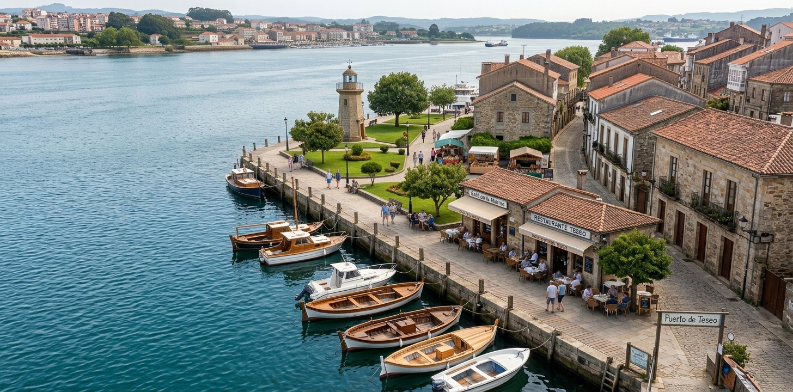

El Puerto de Teseo es un barrio de calles tranquilas junto al agua, con cafés, restaurantes y espacios verdes. Su nombre recuerda a los barcos del puerto, reparados pieza por pieza hasta renovarse por completo.

El muelle del Puerto de Teseo
¿Qué se puede hacer?
Caminar por el muelle y observar los barcos.
Visitar el Parque del Faro.
Recorrer los mercados locales del puerto.
Disfrutar de cafés y restaurantes con vista al río.
Participar de las actividades del parque, especialmente los fines de semana.
¿Por qué se recomienda visitarlo?
Es recomendable para quienes buscan una parte más tranquila y cotidiana de Westview, lejos de las zonas más turísticas.